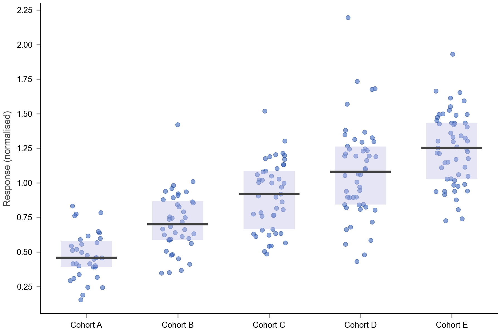

beeswarm_cohort_response
self-generated; 5 cohorts, 35-55 obs each; medians as dark line, IQR as pastel band

P1 single-blue family; P2 dot alpha 0.6; median line bold (P2 stroke compensation); IQR pastel #c0c0ea fill
(reference) bars_ablation_Cancer
figures4papers ImmunoStruct